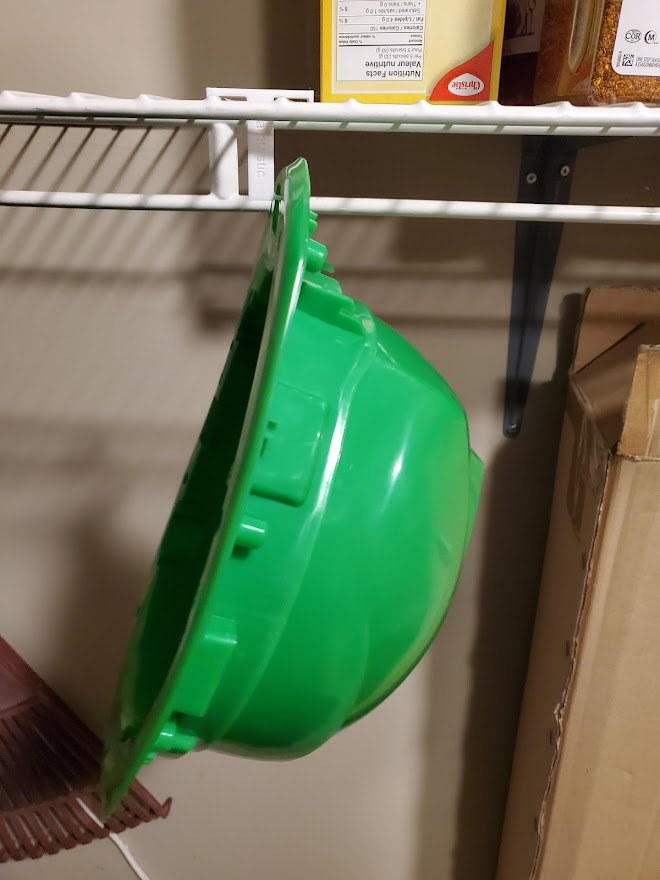
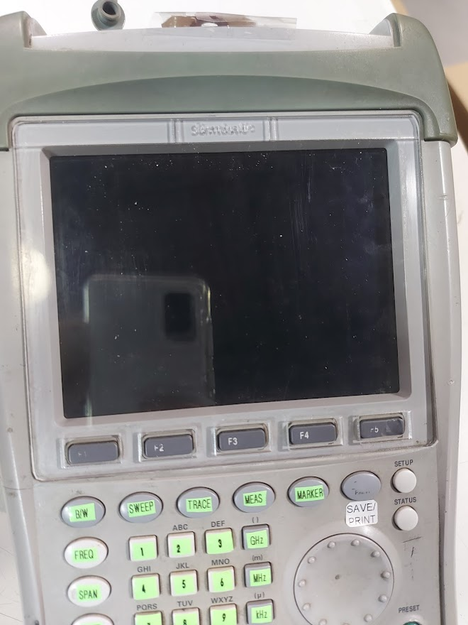

Expérience Professionnelle
- Stages d'Enseignement
- Technicien en Électronique
- Assurance Qualité
- Informatique
Applications Pratiques
Support de Casque Samtastic
Mon lieu de travail avait besoin d'un moyen de stocker efficacement des casques tout en étant assemblés, tout en occupant peu d'espace dans l'entrepôt, car ils sont souvent assemblés par lots de 50 ou plus. En utilisant mes connaissances en logiciels de FAO, j'ai conçu une pince pour s'adapter aux étagères en fil métallique, ce qui nous a permis de maintenir plusieurs casques verticalement sur des étagères en fil mobile, les maintenant ainsi hors du chemin.
Protège-Écran de l'Analyseur de Spectre Samtastic
L'analyseur de spectre de mon lieu de travail a subi une chute lors de son utilisation sur le terrain, ce qui a entraîné la casse de la vitre recouvrant l'écran. Comme l'analyseur est fréquemment utilisé dans des endroits sales, ce protecteur d'écran est important pour maintenir l'affichage de l'unité lisible. Cependant, en raison de sa conception très spécifique, il n'est pas quelque chose qui peut être facilement acheté. En utilisant mon expérience avec les logiciels de CAO, j'ai créé le contour de l'écran avec les boutons et j'ai découpé au laser un nouveau protecteur d'écran à partir d'une feuille d'acrylique.

Ordinateur Spécialisé
Une entreprise locale avait besoin d'un ordinateur robuste pour gérer ses 25+ caméras de sécurité ainsi que d'autres tâches opérationnelles dans l'installation. En utilisant mes connaissances en informatique, je les ai aidés à choisir les bonnes pièces pour le travail, à assembler leur ordinateur, à configurer le logiciel et à l'intégrer dans leur réseau.